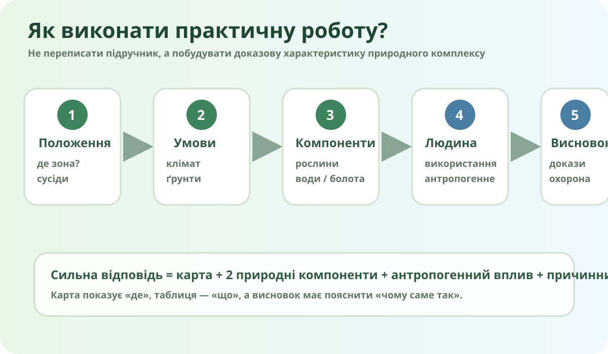

Хто виконує практичну?

Локальна схема: положення → умови → компоненти → діяльність людини → висновок.
Де шукати ці природні зони?
OpenStreetMap — реальна сучасна картографічна підкладка. Вона не підписує природні зони, тому використовується для просторової орієнтації та зіставлення з тематичними даними.
Картографічний доказ
Завдання: відкрийте ESA WorldCover або Copernicus Browser і знайдіть два контрастні фрагменти: один у межах Полісся, другий у західній частині України, де поширені широколисті ліси.
Заповніть таблицю доказами, а не словом «різні»
| Ознака | Мішані ліси | Широколисті ліси |
|---|---|---|
| Положення | ||
| Зволоження й води | ||
| Ґрунти | ||
| Рослинність | ||
| Антропогенне перетворення |

Мішані ліси
Перевірте, чи поєднуються хвойні та листяні породи, чи є надлишкове зволоження, болота та піщані тераси.

Широколисті ліси
Шукайте дубово-грабові та букові ліси, родючіші ґрунти й значну частку освоєних земель.
Чому тут багато боліт?
Карта сьогодні — це вже не «чиста природа»
Оцініть співвідношення природних і антропогенних комплексів на двох обраних ділянках. Для цього порівняйте ліс, болота/води, поля, забудову та транспортні лінії.
Що вважати загрозою?
Не кожне використання ресурсу автоматично є руйнуванням. Важливі масштаб, спосіб і відновлюваність.
Оберіть природоохоронне рішення й доведіть його доцільність
Аргументований висновок
§ за темою + локальна перевірка
Опрацюйте тему про мішані та широколисті ліси в електронному підручнику. Додайте до практичної один локальний приклад: природний комплекс Вашої області або сусіднього регіону, який має подібні ознаки.
Критерії 10 балів
- 2 б. — правильне положення двох зон;
- 3 б. — таблиця з природними компонентами;
- 2 б. — карта/геодані як доказ;
- 1 б. — антропогенне перетворення;
- 2 б. — причинний аргументований висновок.